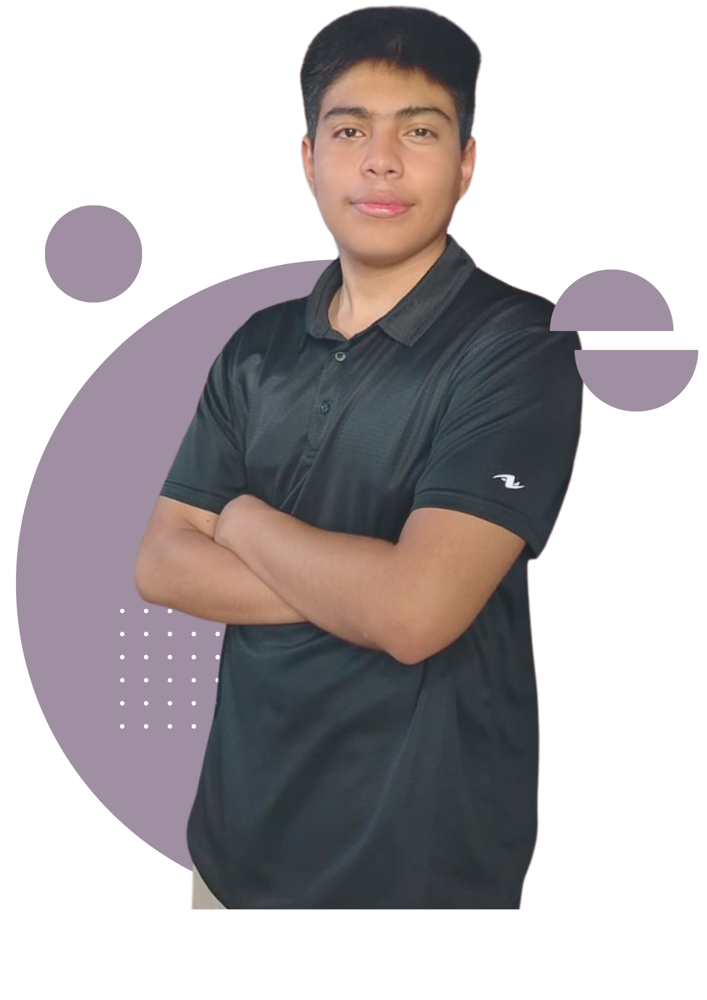
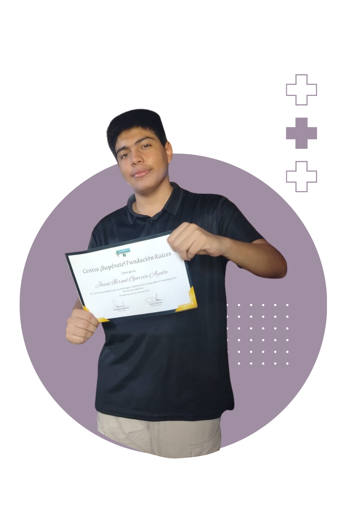

IT
Valores
Inglés
Inicio
Hola
Soy
Israel Ayala
Bienvenidos a mi Portafolio
Soy una persona que busca aprender y mejorar día a día, capaz de lograr sus objetivos y que disfruta de competir. Durante este portafolio verás diferentes proyectos enfocados en las áreas de
Inglés
,
IT
y
Valores

Conoce mas
Sobre mí

Sobre mí
Experiencia Académica
CV
Soy Josué Israel García Ayala
Actualmente estoy terminando mis estudios de bachillerato y un diplomado de Inglés, Informática y Valores. Durante este portafolio verás mis proyectos destacados en cada área y todas las habilidades que he aprendido los últimos 3 años.
Mis habilidades y
Materias destacadas
Informática
Me he especializados en herramientas digitales como: HTML, CSS, JavaScript, Excel, y muchos más.
Inglés
Manejo el inglés a nivel intermedio-avanzado, con buena comprensión lectora, expresión oral y escrita.
Valores
Me guío por principios como la responsabilidad, la empatía, la competitividad y el trabajo en equipo.